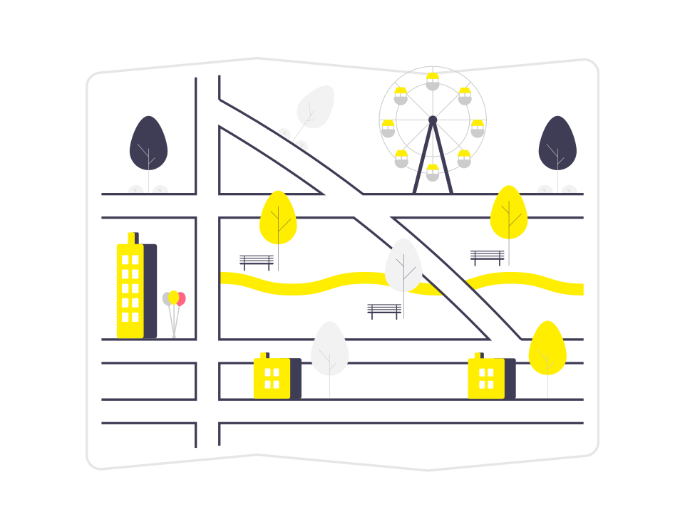
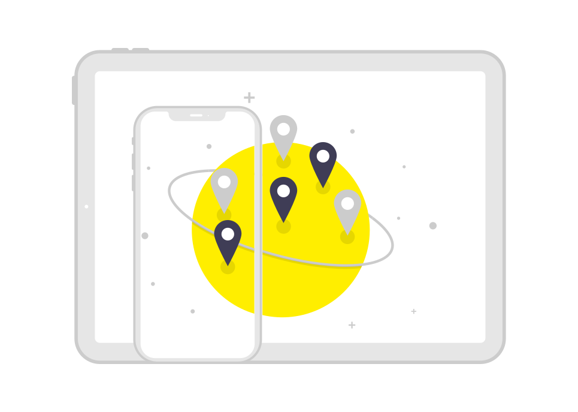

Hoy en día la tecnología está siendo ´parte fundamental en nuestras vidas, tenemos que adaptarnos a ello y ver los beneficios de este, por eso la aplicación de transporte y comunidad de la empresa Macro Place está dando un paso adelante en la comodidad del ser humano hacía en transporte público, últimamente la violencia ha sido un factor muy grande que afecta a todos nosotros, incluso en la espera del camión, con esto ayudaremos a la comunidad en evitar esos eventos de angustia.
Al paso de los años se estará dando más avances tecnológicos y no nos podemos quedar atrás, cada día en una nueva oportunidad en poder ir mas allá de la imaginación, todo empieza con una necesidad, y en este caso, la necesidad es el poder hacer las cosas con mayor seguridad y estar a tiempo en los lugares donde debemos de estar.
Sugerencia de otra ruta disponible:
sugerencia al usuario de que otra ruta puede tomar para llegar a su destino a tiempo y sin ninguna interrupción.

Costos:
Tendrá la opción de saber el costo del pasaje de cada unidad. Ya que no en todas las unidades tienen el mismo costo, unas van mas lejos y cuestan mas dinero.
Sin conexión a internet:
Tendrá funciones sin uso de internet solo sería con las funciones predeterminadas sin actualizar como el tiempo real de las unidades, calles en reparación, etc.

Alarma:
Esta función ayudara en poner una alarma, cuando el camión se está acercando a la parada sonara.
Cambio de ruta:
Si tiene problemas el camión, alguna calle cerrada o fallo mecánico, se dará una notificación de lo sucedido.
Horario de salida y termino de la unidad:
Se le avisa al usuario a qué hora saldrá a servicio la unidad solicitada y su hora de termino.
Paradas:
Se tendrá registrado en el mapa las paradas, (ya sean oficiales o improvisadas).
Mapa:
El mapa tendrá la funcionalidad de dar una vista del movimiento de las rutas durante el transcurso del día, gracias a esto se nos da la información de a qué hora aproximadamente podrás tomar el camión, esto puede variar ya sea por un fallo en el camión o algún desvió imprevisto, esto con la finalidad de dar una información exacta al usuario y prevenir retrasos en la toma del transporte.
La rutas serán trazadas de diferentes colores para así pode identificar hacia que rumbos se dirigirán, al seleccionar la ruta que uno necesita usar se darán más opciones como las calles y paradas por las que pasara, el tiempo estimado de llegada a la parada, entre más funcionalidades.